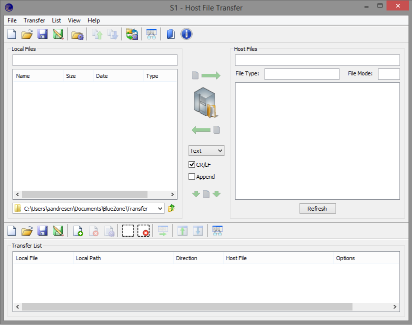

The IND$FILE transfer is controlled through the Host File Transfer window. The Host File Transfer window provides an easy-to-use graphical interface. You can send or receive a single file to or from the host. You can also create transfer lists to easily preform batch file transfers.

New: Creates a Mainframe Display transfer file (.mdf).
Open: Opens a saved Mainframe Display transfer file.
Save: Saves the transfer options with the display session. The next time the session is opened, the options set in the Transfer Setup window are already configured.
Save As: Saves the Mainframe Display Transfer file as an .mdf file in the \Config folder by default. This allows you to create, save, and reuse multiple transfer configurations.
Options: Opens the File Options window. Refer to Setting file options for more information.
Send: Sends the selected local file to the host.
Receive: Receives the selected host file to your local machine.
Transfer Setup: Opens the Transfer Setup window. Refer to Configuring IND$FILE transfer setup for more information.
Expand View: Expands the view of the transfer pane of the window; the Transfer List pane disappears. Click the icon again to return to the default view.
BlueZone Help Topics: Opens the BlueZone Display and Printer Help.
About BlueZone: Opens the About BlueZone window which contains version and copyright information.
Send: Sends the selected local file to the host.
Receive: Receives the selected host file to your local machine.
Add to List: Moves the selected local or host file to the Transfer List.
New: Creates a new Mainframe Display Transfer List file (.mdl).
Open: Opens a saved Mainframe Display transfer list file.
Save: Saves the current Mainframe Display transfer list with the session. The next time the session is opened, the transfer list is displayed in the Transfer List pane.
Save As: Saves the Mainframe Display transfer list file as an .mdl file in the \Config folder by default. This allows you to create, save, and reuse multiple transfer lists.
Add: Opens the Transfer Properties window. From here, you can add a file to the transfer list. Refer to Using the Transfer Properties window for more information.
Remove: Removes the selected file from the transfer list.
Properties: Opens the Transfer Properties window for the selected file.
Select All: Selects all of the files in the transfer list.
Select Cancel: Deselects all of the files in the transfer list.
Run: Sends or receives the files in the transfer list.
Move Up: Moves the selected file up one space in the list.
Move Down: Moves the selected file down one space in the list.
Expand View: Expands the view of the Transfer List pane; the transfer pane disappears. Click the icon again to return to the default view.
Local File: The file name of the local file.
Local Path: The location of the local file.
Direction: Send, Receive, or None.
Host File: The name of the host file that is being received or that the local file is being sent to.
Options: Displays the file options for the transfer. For example, Text, Binary, CRLF, and/or Append.